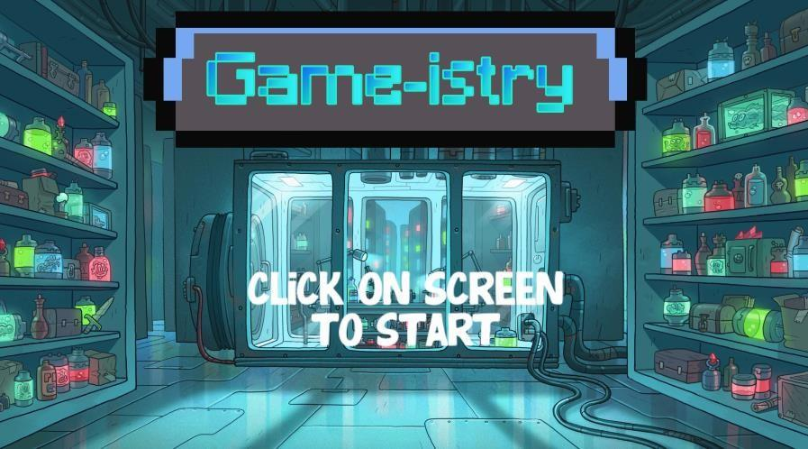
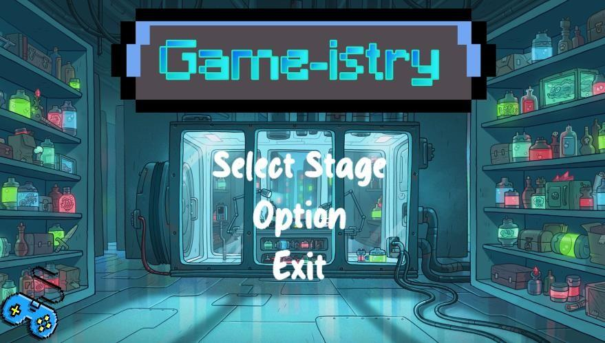
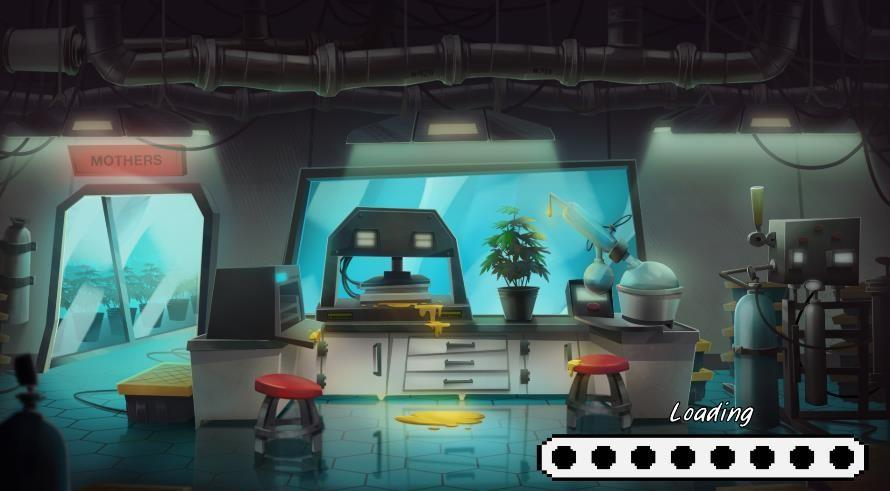
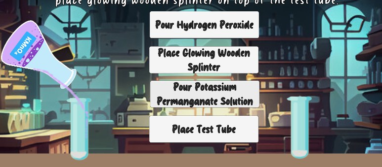
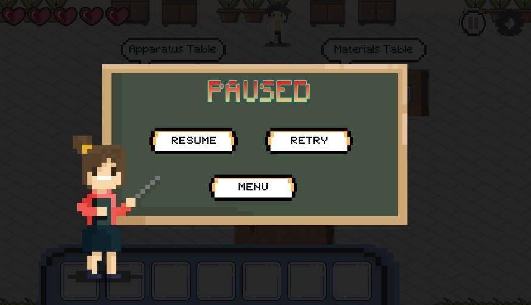
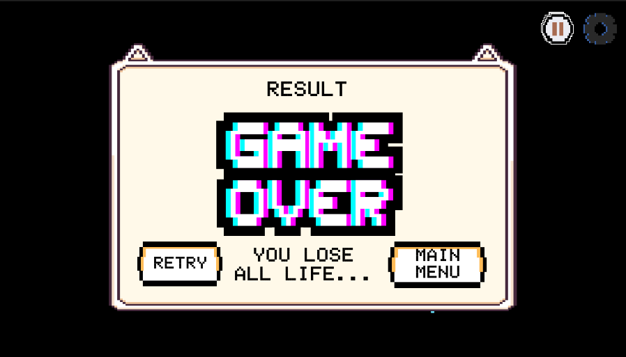
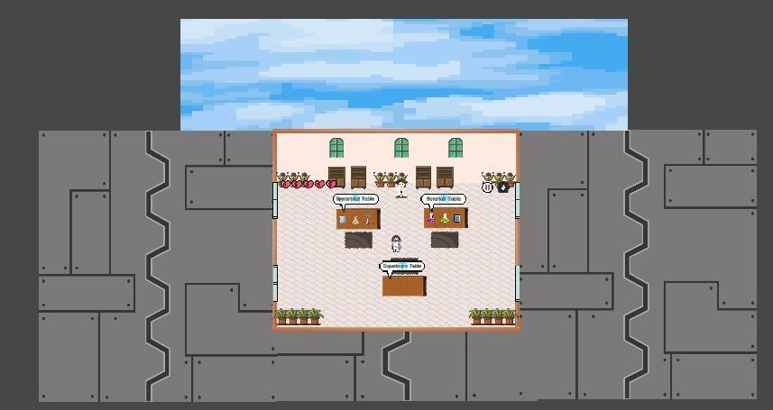

01 · Catalyst
Explore how the presence of a catalyst affects the rate of a chemical reaction.
A 2D educational chemistry game developed in Unity to help secondary-school science-stream students explore the rate of chemical reactions through virtual laboratory experiments.
// The idea behind Game-istry
Game-istry was created as an alternative, interactive way for students to learn chemistry experiments. It simulates a laboratory experience in which players collect apparatus and materials, follow experiment steps, and observe outcomes related to the rate of reaction.
The project focuses on Form 5 Chemistry, Chapter 1, and is designed for students around 16–17 years old in the science stream. The game combines 2D visuals, animation, text, and sound to guide players through the activities.
// Three factors that affect reaction rate
Explore how the presence of a catalyst affects the rate of a chemical reaction.
Investigate how the size of a substance's surface area relates to reaction rate.
Explore how temperature affects the speed of a chemical reaction.
// Learn first, then test your understanding
// Screens and interface views from the project











// Game-istry in action
The current project covers three rate-of-reaction topics. The thesis identifies expanding the game with additional chemistry topics and increasing hands-on interaction—such as more drag-and-drop activities—as possible future improvements.